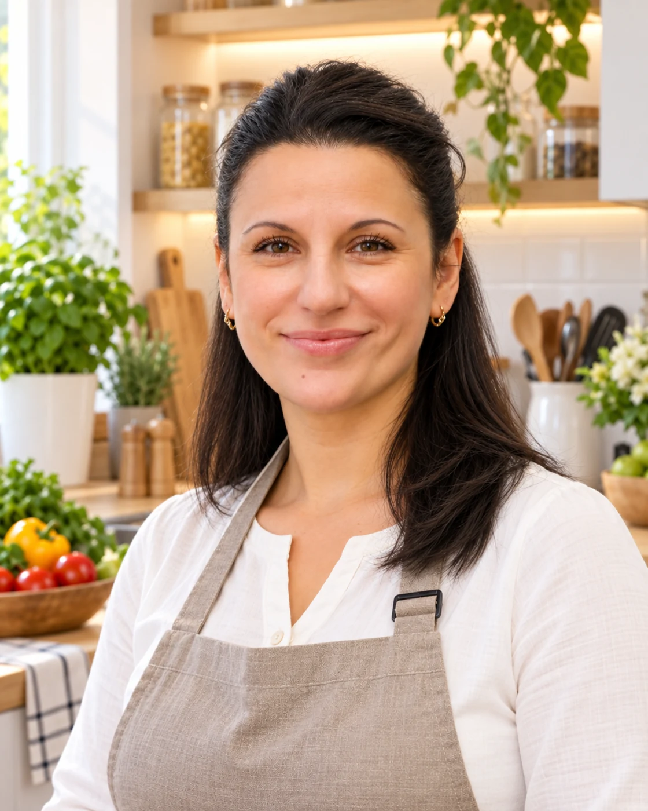

Начнём с ваших привычек
Обсудим, что вы обычно едите, какие блюда любите и каких продуктов избегаете. После этого составлю меню и список продуктов.
Домашний повар
и семейная помощница
Меня зовут Мария. Я профессиональный повар. Могу готовить для вашей семьи, заниматься уборкой и, если нужно, присмотреть за детьми.
Что я могу взять на себя
01 Кухня — моя профессия
Могу взять кухню на себя: продумать меню, составить список продуктов и приготовить еду. После готовки всё уберу.
Обсудим, что вы обычно едите, какие блюда любите и каких продуктов избегаете. После этого составлю меню и список продуктов.
Могу готовить детям отдельно. Много лет готовила в детских учреждениях, в том числе вегетарианские блюда из натуральных продуктов.
Приготовлю еду на день или на несколько дней вперёд. После готовки приведу кухню в порядок.
Есть действующая
медицинская книжка
02 Давайте познакомимся
Мне 51 год.
Замужем, двое взрослых сыновей.
Больше всего я люблю готовить.
Работала поваром в частных детских учреждениях и готовила для семьи в частном доме. В загородной гимназии также работала тьютором. За это время научилась и готовить для детей, и находить с ними общий язык.
Мой опыт
Также работала поваром в частном детском саду и загородной гимназии.
03 Домашние дела
Могу заняться уборкой, разобрать вещи, убрать после детей. Бережно отношусь к дому и соблюдаю привычный для вас порядок.
Помощь по дому
Если нужна помощь с ребёнком
Встречу ребёнка после школы или занятий, накормлю, схожу с ним на прогулку или побуду дома, пока вы заняты.
Мне легко находить с детьми общий язык. Могу спокойно объяснить и договориться, без повышенного голоса.
Присмотр за детьми — дополнительная помощь. Уроки и развивающие занятия я не провожу.
04 Где и как я работаю
Я живу в Павловской Слободе и ищу работу на Новой Риге или в ближайших коттеджных посёлках.
Начнём с разговора
Напишите или позвоните. Расскажите, где вы живёте, какая помощь нужна и какой график вам подходит.
Написать в WhatsAppДомашний повар
и семейная помощница
Павловская Слобода · Новая Рига
Сохранить анкету PDF